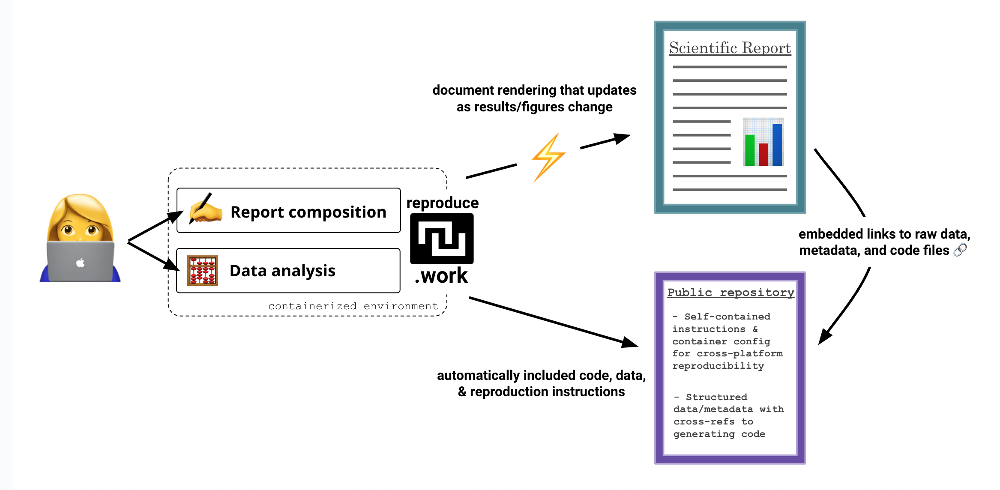

Frequently Asked Questions
How is this different from existing efforts in open science?
Recent interest in open science has been a positive step toward improving the reproducibility of scientific research, but the open science movement has largely focused on the transparency of scientific research, rather than explicilty facilitating its reproducibility. Many of the tools and practices of open science — open data, open code, pre-registration, etc. — are important steps toward reproducibility, but they are not sufficient, as they require authors to provide detailed documentation and instructions to ensure that others can independently replicate their work. This work is often left undone and, even when it is, writing adequate documentation and troubleshooting cross-platform execution errors can be a time-consuming and error-prone process.
Why containerization?
Aren’t tools like Python’s pip (and venv and conda and mamba and etc.) and R’s .RProj (and Renviron and packrat and etc.) sufficient?
Existing software projects around reproducibile/open science are often language-specific. The power of containerization is in its universality. Nearly any scientific environment can be packaged into a containerized interface, opening up the possibility for language-agnostic reproducibility standards and frameworks that can transcend any particular programming language.
Opinion
An opinionated developer might say that containerization is an objectively better user interface and dependency management system than all the tools listed above. That opinion may stem from the ability of containers to either meet or exceed the standards of these tools on several dimensions:
- wideness of compatibility
- user friendliness – particularly when that depends on (1)
- pre-requisite installations
pip, RStudio, julia, selenium, etc. in ways that are easier to express than if one started with any of these other abstractions.
Due to the vagaries of software engineering, tools like Python virtual environments and R project files still leave a lot of room for technical decay; this limits the longevity of projects that rely on these types of tools exclusively. By packaging scientific computing environments into containers, scientists can ensure that their analyses can be replicated exactly, irrespective of changes in underlying technology or platforms. This approach enhances the reliability of scientific findings and facilitates collaboration — both within research teams but also across the broader scientific community by allowing anyone, anywhere, anytime to build upon the work of others.
What is the long-term vision for this proejct?
I have starting writing up a bigger vision for reproduce.work in a rough-draft manuscript, which can be found here.
As it currently stands, the reproduce.work CLI tool is essentially a simplified Docker interface for scientists. However, the potential applications of containerization technology go far beyond this, opening up possibilities for automating much of the existing work that falls under the umbrella of “open” science.
Part of this bigger vision includes the development of a framework for metadata publishing in a way that allows scientific projects to be automatically verified, almost in a CI/CD-friendly manner. It is not hard to think of at least one or more deterministic checks – i.e., fully programmatic scripts that could be run in the cloud or verified/signed independently – that would be valuable for projects that make use of scientific computing.
For example, if scientists were to conduct their analyses and author their manuscripts inside containerized environments, it would be trivial to not only reproduce their published reports from scratch, but it would also be possible to automatically verify that statistical results, figures, and data published in scientific manuscripts match exactly the output of their analysis code. This entirely removes the possibility for human transcription errors and can potentially mitigate (or at least significantly raise the costs of) certain types of fraud. However, the primary vision of this project is not to police bad actors, but rather to make the best scientists better by making it easier to document and share their work with others.

What’s more, as LLMs proliferate, one wonders whether application of these tools to academic publishing will be a blessing or a curse. One might be tempted to expand the types of checks we might want to do to include things like “Get the consensus view of the 100 top performing AI models on {this_leaderboard} in response to this battery of prompts: [{prompts}]”. There is also the possibility that as LLMs become more integrated into scientific workflows, the importance of executability, verifiability, and reproducibility will become even more important.
My hope is that reproduce.work can contribute to some of the upside associated with these possiblities. Much of what is described above is possible with current containerization technologies, but will require more development and coordination to become a reality.